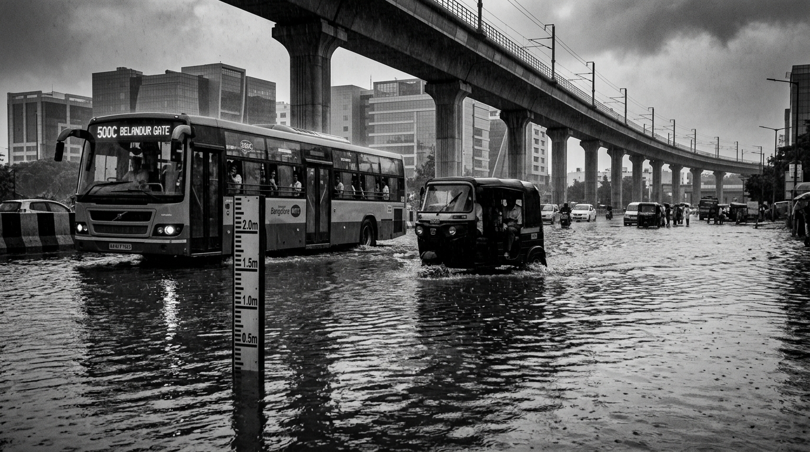

Bellandur Outer Ring Road: Waterlogging & Stalled Traffic
Continuous heavy rain has flooded the Outer Ring Road near EcoSpace to nearly 2 feet deep. Stormwater drains are clogged with mud and silt, slowing vehicle movement to a crawl. City emergency teams have deployed water pumps and traffic diversions.
What Citizens Are Reporting on the Ground
Photos, emergency phone calls, and rainfall sensors received over the past hour from residents in Bellandur.

Water Depth: About 1.5 to 2 feet (45–60 cm) · Location: Outer Ring Road near Metro Pillar #142
"ಬೆಳ್ಳಂದೂರು ಗೇಟ್ ಬಳಿ ರಾಜಕಾಲುವೆ ನೀರು ರಸ್ತೆಗೆ ನುಗ್ಗಿದೆ, ವಾಹನಗಳು ಮುಳುಗಿವೆ."
"The big storm drain near Bellandur Gate is overflowing onto the road. Several cars and autos cannot move because of the flood."
Other Citizen Calls from This Neighborhood
Resident in Green Glen Layout reports dirty rain water bubbling out from the street manhole.
Transformer sparked near the substation during heavy rain; power was turned off as a safety measure.
Cars and two-wheelers cannot move forward near the lowest point under the flyover due to water on the road.
Next: Check the Flooded Area on the Map
See exactly where the water is pooling, follow the storm drain channels, and see nearby hospitals and detour routes.